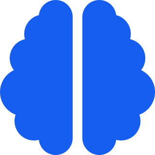
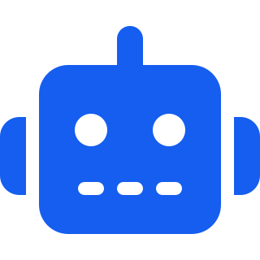
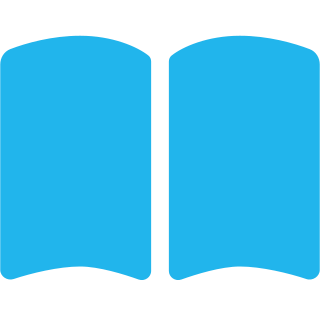
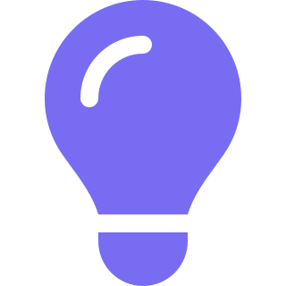
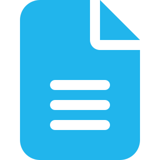
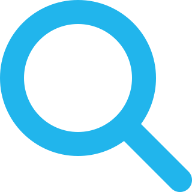
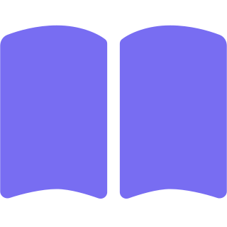
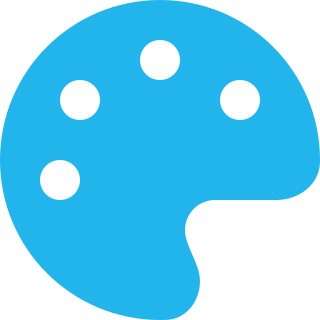
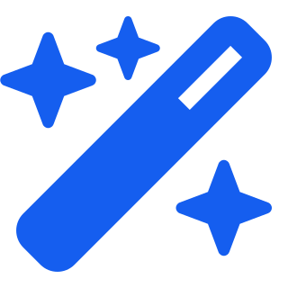

다양한 AI 도구와 배움의 즐거움
AI와 함께하는 새로운 배움


웹툰·캐릭터·숏폼 창작

ChatGPT와 디지털 교육
생활 속 AI 활용 교육
코딩·영상·업무 자동화
배우고, 직접 만들고, 생활에 활용합니다.

질문하면 글을 써줘요
말로 그림을 만들어요
생각을 영상으로 표현해요
질문과 글쓰기

정보 이해와 아이디어

문서 요약과 글쓰기
업무와 문서 작성

출처를 확인하는 정보 검색

내 자료를 요약하고 학습
중요한 정보는 출처를 다시 확인하세요.

카드뉴스·포스터
발표자료 만들기

새로운 이미지 생성
글자가 있는 이미지
자동 자막·편집
영상 편집·효과
AI 영상 생성
AI 음악 제작
AI 음성 제작
사진 한 장, 문장 한 줄로 시작하는 창작
오늘의 배움이 변화의 시작입니다.
여행 계획 · 나만의 초대장 · 추억 영상